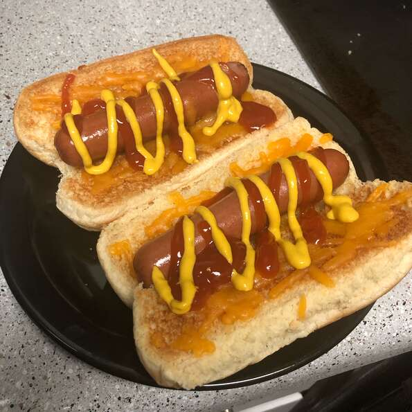

Hot Dog

Description
Perfectly crisp hot dogs and toasted buns made in minutes with the help of your air fryer. Top with ketchup, mustard, relish, chili, or condiments of choice.
Igredients
- 4 hot dog buns
- 4 hot dogs
Steps
- Preheat air fryer to 390 degrees F (200 degrees C).
- Place buns in the basket of the air fryer and cook for 2 minutes. Remove buns to a plate.
- Place hot dogs in the basket of the air fryer and cook for 3 minutes. Transfer hot dogs to buns.
Return to Home Page
Taken from: https://www.allrecipes.com/recipe/268494/basic-air-fryer-hot-dogs/